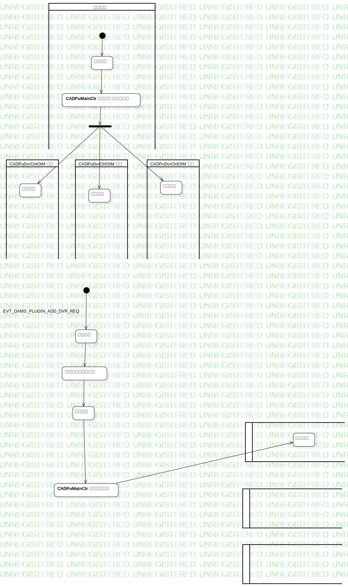

Activity1
UMLActivity
微服务
::
CIM2
::
Activity1
Description
none
Diagrams

ActivityDiagram1

ActivityDiagram2
Groups
http服务
服务层
协议驱动层
业务线程
ActivityPartition1
ActivityPartition2
ActivityPartition3
CADPuDvrCtrlOtM 线程
CADPuDvrCtrlOtM 线程
CADPuDvrCtrlOtM 线程
Nodes
InitialNode1
HTTP业务
设备协议接口：调用相关设备协议获取码流
X 设备
获取码流
创建当前消息的任务
任务运行
CADPuMainCtr 分发任务 至各自线程
InitialNode2
处理消息
创建当前消息的任务
任务运行
CADPuMainCtr 找到空闲线程
处理任务
Edges
(InitialNode1→收到码流请求)
(收到码流请求→HTTP业务)
(HTTP业务→主业务模块：处理码流请求)
(主业务模块：处理码流请求→设备协议接口：调用相关设备协议获取码流)
(设备协议接口：调用相关设备协议获取码流→获取设备)
(获取设备→X 设备)
EVT_DAMS_PLUGIN_ADD_DVR_REQ (InitialNode2→处理消息)
(处理消息→创建当前消息的任务)
(创建当前消息的任务→任务运行)
(任务运行→CADPuMainCtr 分发任务 至各自线程)
(ForkNode1→处理任务)
(ForkNode1→处理任务)
EVT_DAMS_PLUGIN_ADD_DVR_REQ (InitialNode2→处理消息)
(处理消息→创建当前消息的任务)
(创建当前消息的任务→任务运行)
(任务运行→CADPuMainCtr 找到空闲线程)
(CADPuMainCtr 找到空闲线程→处理任务)
(CADPuMainCtr 分发任务 至各自线程→ForkNode1)
(InitialNode2→任务运行)
(ForkNode1→处理任务)
Properties
Name
Value
name
Activity1
stereotype
null
visibility
public
isReentrant
true
isReadOnly
false
isSingleExecution
false
Owned Elements
ActivityDiagram1
ActivityDiagram2